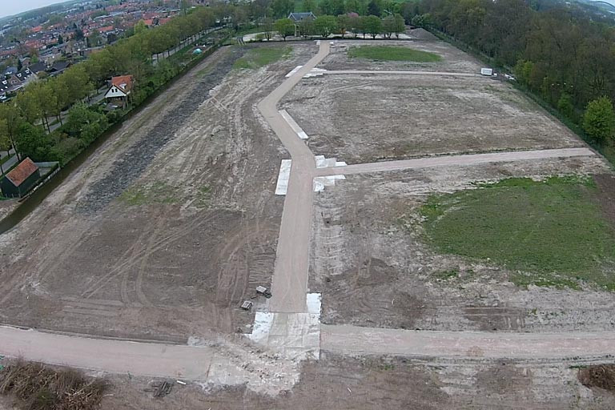
Grondwerk
Ontgraven, ophogen en bouwrijp maken. Van een bouwkavel tot een complete nieuwbouwwijk: wij brengen de grond op hoogte en leggen de bouwwegen aan, zodat de bouwer meteen verder kan.
Grond-, weg- en waterbouw in Culemborg
Grondwerk, straatwerk en riolering voor gemeenten, bouwbedrijven en particulieren in midden Nederland. Een familiebedrijf met korte lijnen: u belt, wij denken mee.
5 sterren op Google
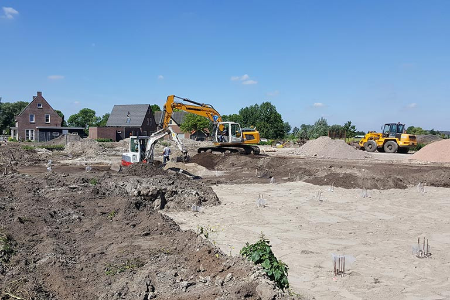
Wij leggen wegen aan en onderhouden ze, maken terreinen bouwrijp, bestraten wijken en zorgen dat het riool klopt. Vanuit Culemborg, centraal in de Betuwe, zijn we snel in heel midden Nederland.

Ontgraven, ophogen en bouwrijp maken. Van een bouwkavel tot een complete nieuwbouwwijk: wij brengen de grond op hoogte en leggen de bouwwegen aan, zodat de bouwer meteen verder kan.
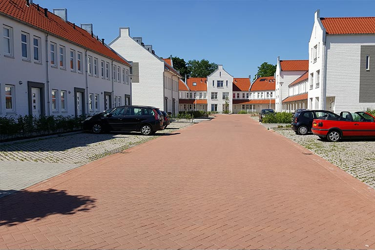
Aanleg en onderhoud van wegen, straten, pleinen en parkeerplaatsen. Strak gelegd, met de juiste afwatering, zodat het er over jaren nog net zo goed bij ligt.
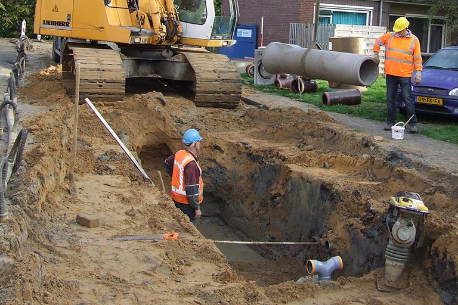
Van een complete rioolrenovatie tot het aanleggen van huisaansluitingen. En zit er een rioolverstopping, dan verhelpen we die ook.
Verstopping? Bel 0345 512 200Wij werken met korte lijnen tussen kantoor en buitendienst en een ervaren, gemotiveerd team met ruime vakkennis. Dat maakt ons snel en flexibel, ook als er onderweg iets verandert.
1959
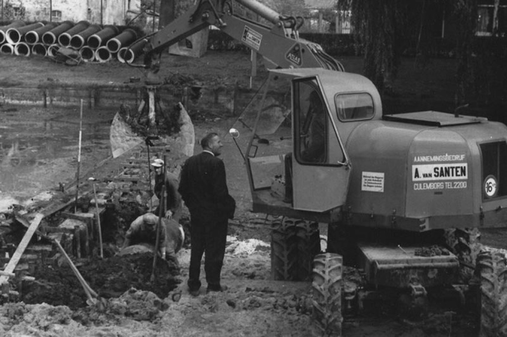
1959
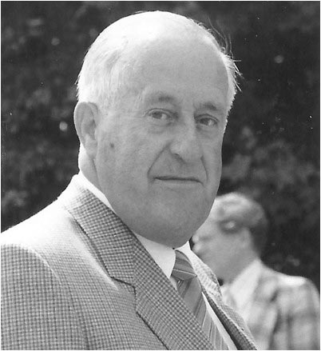
Na jaren als uitvoerder in de grond-, weg- en waterbouw start Arie van Santen op 35-jarige leeftijd zijn eigen bedrijf: A. van Santen N.V. Hij zoekt zelf het werk en houdt zelf contact met de opdrachtgevers.
De jaren daarna
Inzet en kwaliteit laten het bedrijf groeien. Met eigen materieel en mensen volgen grotere werken: het complete stationsgebied en het eerste openbare zwembad De Welborn in Culemborg, en het bouw- en woonrijp maken van de hele wijk Voorkoop.
1993
Op 70-jarige leeftijd draagt Arie het bedrijf over aan zijn zonen Piet en Ton van Santen. Sindsdien heet het Gebr. van Santen B.V., nog altijd vanuit Culemborg.
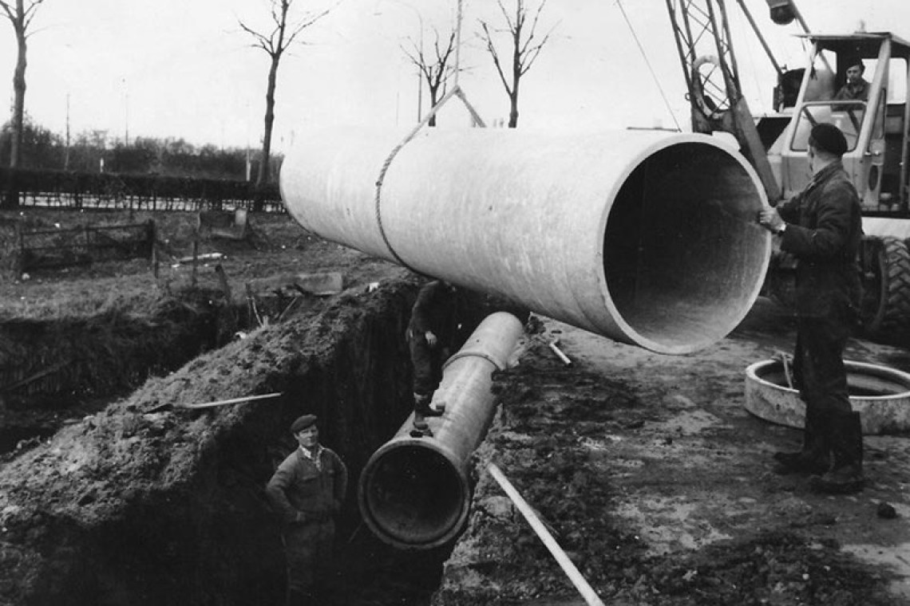
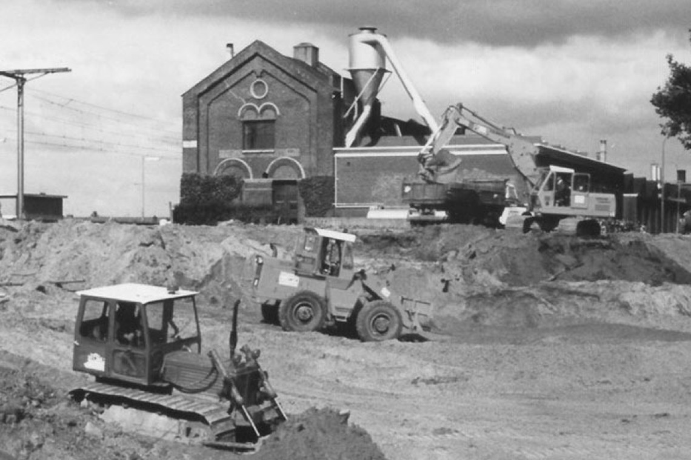
Een greep uit onze laatste projecten, van Culemborg tot Buren en van Leerdam tot Beesd.
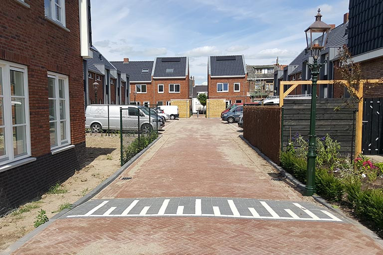
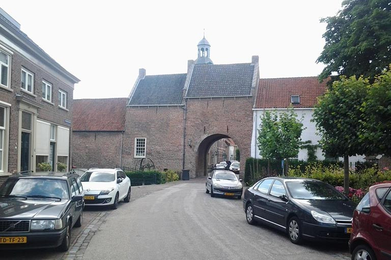
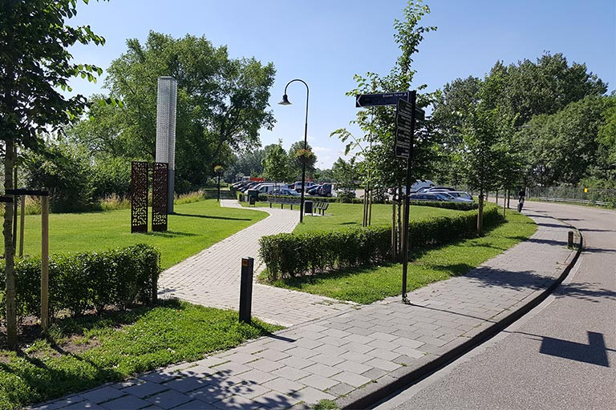
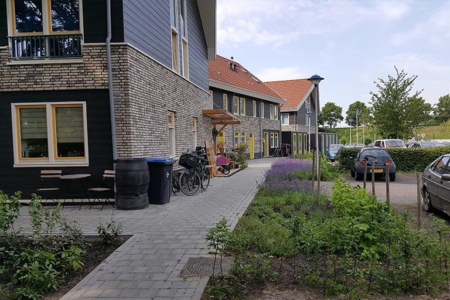
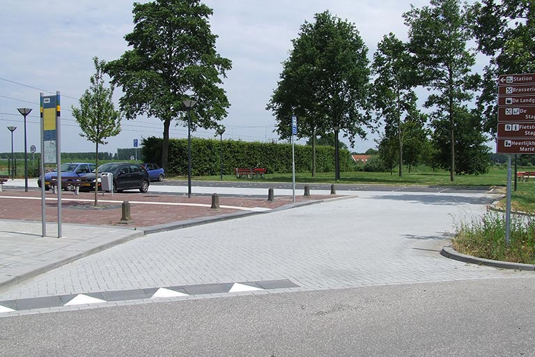
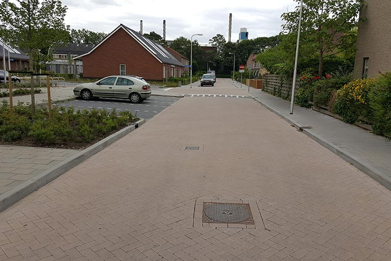
En verder onder meer: bouwrijp maken Het Woud in Ingen.
★★★★★
“De Gebroeders van Santen hebben de basis van de openbare Moestuin de Noordertuin aangelegd. Het zijn fijne betrokken mensen die goed luisteren naar de wensen van de klant en zelf mee denken om tot een optimaal resultaat te komen. zeer tevreden.”
Ons managementsysteem combineert kwaliteit (NEN-EN-ISO 9001) met veiligheid, gezondheid en milieu (VCA**). Elke opdracht volgt vaste processen, met doorlopende controle en verbetering.
Zwaar fysiek werk verlichten we waar het kan met mechanische hulpmiddelen. En we werken alleen met veilig, goedgekeurd materieel en gereedschap.
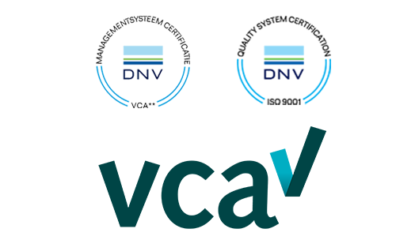
Geheel vrijblijvend. We denken graag met u mee, van een huisaansluiting tot een complete wijk.
0345 512 200 info@gebrvansanten.nl Gebr. van Santen B.V.